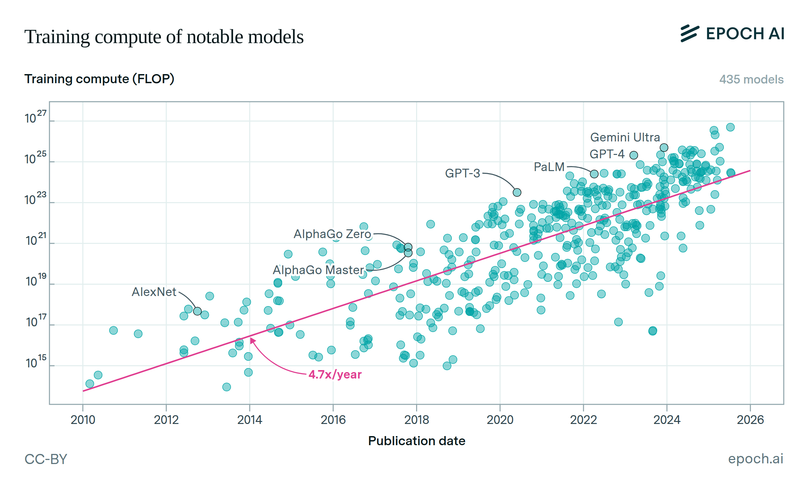

Tristan Hodgson


What's the Deal with LLMs?
2025-07-30Recently I was talking about Large Language Models (LLMs) with the CEO of a large UK based healthcare charity, we were discussing the frequently ignored social issues that accompany these tools that have become quite ubiquitous in our everyday lives. What I discovered, during the course of this conversation, was that, while I do quite frequently think about these issues, I rarely think of the ways in which these issues are interconnected. I also recently read a popular article from SITUATIONAL AWARENESS: The Decade Ahead by Leopold Aschenbrenner -- a former employee of OpenAI -- that was very optimistic and in my opinion flawed in it's approach to the issues. This has therefore prompted me to write this article as a snapshot of my current thoughts on the issues that the field of LLMs face both now and into the future.
Before I go any further, however, there are a few things that I think need addressing. Firstly is that I will almost certainly change my mind and be wrong about most of the issues that I outline, however I do not view this as an issue, after all changing ones mind is an important part of scientific thinking, especially in such a fast moving industry. Morover, I've structured this article as a kind of response to the article by Aschenbrenner, pointing out where I agree and disagree with the current state ofMLas it has provided a useful framework from which to build my research and writing (I am after all a non-expert from outside the industry).
Investment
It's no secret that labs that work on Machine Learning (ML) have received a lot of investment. Companies are already spending on the order of 100s of billions each year AI, and this investment will only continue to grow with Mckinsey predicting this cumulating to $4.4 trillion by 2030. It has been suggested that current models cost on the order of $100 million to train and yet within three years could cost as much as $100 billion. Yet in spite of the enormous investment and interest in the sector, profits are often non-existant.
I believe that investing in science and technology produces good outcomes for us all (e.g. NASA, CERN) and there's can be no doubt that LLMs are technologically impressive. Yet, in spite of this, it seems obvious to me that the level of investment currently going on will not be sustained unless LLM labs can figure out a way to be profitable.
Aschenbrenner is very optimistic about the idea that LLMs will increase in power as it has done in the past--that this trend line will remain unbroken. In the article, he outlines the three main reasons for this growth in capability: increases in compute, new innovative algorithms, and finding new ways of using existing models (e.g. agentic modes and reasoning models). Nevertheless it appears to me that all three of these factors depend heavily on continued investment. As we saw earlier compute is very expensive and newer models are likely to demand more of it; would the same gains be possible if compute power was more limited? Similar issues emerge related to talent. Currently, LLM labs pay very high salaries, and are willing to acquire the best and brightest by any means necessary. Having highly intelligent researchers means that the issues associated withMLresearch get easier to solve. Therefore, it seems plausible to me that if investment were to decrease and salaries went down, progress would slow as talent decreased. To quote every investment advert ever: past performance is not an indication of future results.
The issue that has captured public imagination the most is the issue of data scarcity, the idea that as companies have already scrapped most of the web in search of valuable training data (I'll come onto the issues with this practice later) there is a risk that they will run out, creating a brick wall for progress. I'm less unconvinced by this argument, Aschenbrenner many potential approaches which are being explored. At time of writing, no solutions have been announced (AI labs often work in secret to maintain technological supremacy) though I predict that this problem will not prove insurmountable.
Performance
Given that we now understand why investment is such a big issue for these research labs, how do they plan to deal with this? Their plan seems to be that of a startup: burn through lots of money in the beginning by attracting lots of users, then begin to extract more and more money from these customers as time goes on until profitability is achieved.
Critically, this relies on individuals and, more importantly, companies seeing value in the services that LLMs provide. I think that these research labs make a critical mistake in this regard, they assume that if they make better and better models, the users will follow. Aschenbrenner claims that current models are similar in competence to a PhD student outside of their own discipline, yet very few jobs require a PhD so by this logic most jobs that can be replaced already should've been. This line of thinking shows that perhaps LLMs are already good enough at the reasoning tasks on which we benchmark them and it is instead other factors that prevent their adoption.
The first and perhaps most simple issue is that we are optimising for the wrong thing. Labs are spending enormous quantities of time and effort improving their scores at many benchmarks most of which revolve around complex mathematical and other very complex academic tasks. Despite this, most people use LLMs for very different tasks some the largest use cases for LLMs include summarisation of text and chat-bots imbedded into web pages. It seems to me that at least part of the reason that software developers have such a high uptake in LLM usage is partially due to labs optimising so heavily for software devlopment. To some extent this is understandable: most ML researchers come with some level of mathematical or academic background so they are more comfortable building these benchmarks, combined with the fact that quantitative benchmarks are much easier to score than qualitative ones. Some attempts to correct this do exist, but it seems clear that we are a long way off from compelling LLM authored novels. This matters because LLMs write slightly unusual text, as you can probably tell, I love an em-dash, but not to the same extent as Chat GPT.
Another issue is simply one of inertia. Transitions take time, to suggest that LLMs adaption will be overnight is foolish, it will be a slow transition where business leaders need to figure out how best to integrate this new technology. This transition will be difficult and mistake will be made. Regretfully, many executives, seem to feel a need to get LLMs to everything as quickly as possible regardless of its utility to the user. It seems to me that some need to return to the ideas of user centric design -- starting with a problem before presenting a solution rather than starting with a technology and creating a solution to a problem that may not exist. I somewhat sympathise with Apple in this regard; in the past Apple always avoided talking about the ML tech that made their products work, yet recently, investor backlash has forced them to discus their use ML tech in an effort to appear up to date. WWDC 2024 was arguable the most significant moment for the perception of ML in business for precisely this reason.
Furthermore, there are issues of accountability. The IBM Training Manual 1979 contains a quote which is as pertinent today as the day it was written: "A computer can never be held accountable, therefore a computer must never make a management decision". How do we decide responsibility when a ML system kills somebody or makes horrendous, racist comments (remember that similar systems are already making important decisions around topics like hiring). I'll be honest, this is a problem that worries me greatly; we were all so worried about AI machines taking over the world and starting to kill people that we missed it when it began.
LLMs are fundamentally stochastic in nature so as we give them more to do, the number of mistakes they make will increase by the law or large numbers. While there are people working on these issues of hallucination and implementing guardrails, the inherently probabilistic nature of these systems means that I don't hold out much hope, after all, there is no algorithm for truth.
ESG Issues
The ESG issues associated with ML are plentiful, so plentiful, in fact, that there is no possible way that I can cover them all in the depth I would like without this article ballooning in size even more than it already has. What I will do instead is briefly outline a few of the issues for which I feel I have an interesting point to make.
Copyright At this point, it is clear that LLMs are built on the back of stolen works. It also seems as though courts will uphold their conduct in an attempt to avoid stifling innovation (though cases are still playing out). My controversial opinion on this is that the cat is somewhat out of the bag; we want to live in a world where copyright means something. However, even if we rule that domestic companies cannot steal, the models built outside of our jurisdiction will not follow our laws, hence we would be left behind. My tentative solution to this would be a long overdue reform of copyright law. I'm largely convinced by Tom Scott's argument for copyright lasting for 20 years. This would allow large quantities of the internet to be scrapped, but new data would be protected. This would encourage deals with news publishers and product reviewers this would allow us to back track slightly on the great decoupling such that there is still and open web left in a world of zero-click searches.
Jobs If the implementation of LLMs is successful then some jobs will disappear. In fact, we are already seeing some evidence of the beginning of this. The argument that people make is that new jobs will be created, I remain unconvinced by this argument. Many of the new jobs associated with AI that I have seen so far have been low-skilled data-labeling jobs. That being said I could be wrong about this, there was a recent article about replacing high-skilled data labeling, this is perhaps marginally better.
Climate and the Environment I don't much to add on this point that hasn't already been said. I particularly like this video by Dr. Simon Clark as it very well researched and strikes a good balance of avoiding alarmism and acknowledging the scale of the issue (including how little we know about the scale of the issue).
Consolidation and Privacy The resources required to run the state of the art LLMs are enormous, in a recent video about running a Quantised version of Deepseek R1, the stated machine has 128GB of memory which alone costs close to £300. This is unachievable to nearly everyone, this means that, most people have to rely on the large cloud based solutions. Yet, we have already seen these companies abuse this position. The simplest solution to the data scarcity problem is to collect more data, the easiest way to collect this new data is to mine it from your users. I predict that we will see more schemes like those perpetrated by Google over the coming years.
Alignment Perhaps the issue that people give the most stock to is alignment. Alignment as an issue comes in two forms, superintelligence and everyday. While there are some very scary sounding papers about LLMs deceiving people, I'm not wholly convinced by the argument of emergence. That being said, I'm far from an expert so could very well be wrong. What interests me more is the way in which current, commercial LLMs display mis-alignment. Be it the recent controversy where Grok "praised Hitler" or Microsoft Tay becoming very antisocial, we have seen many times that LLMs are not immune from noticing and exasperating negative patterns in society. This will only become more and more of an issue as we let LLMs control more and more of our lives, remember they already influence hiring and related ML algorithms are already used in making legal decsions. It appears that we have descided as a society to implement first and implement checks and balances second, people will be harmed by this choice.